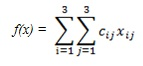
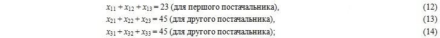
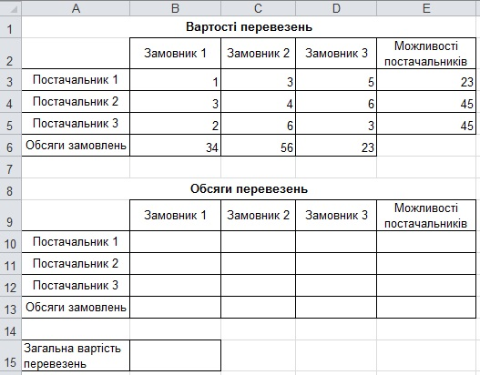
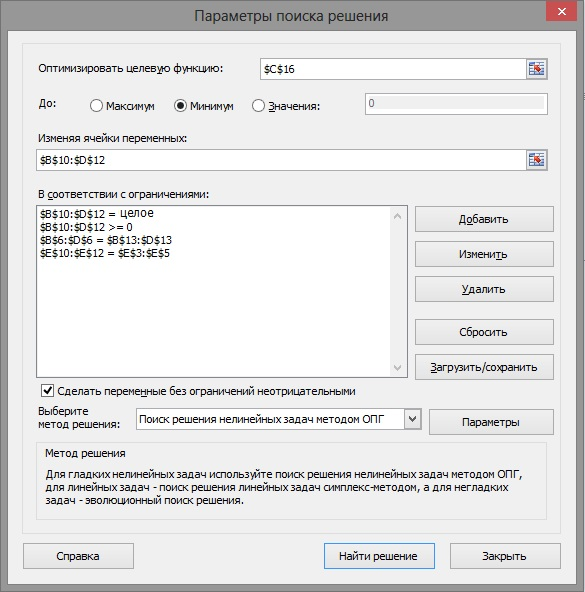
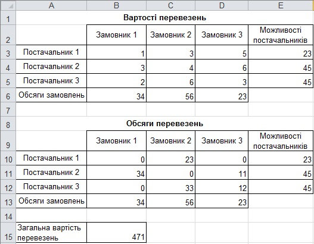

Практична робота 6.1
Є три постачальники та три замовники певного товару. Відомі кількості наявного товару в кожного з постачальників, обсяги замовлень замовників, а також вартість перевезення одиниці товару від кожного постачальника до кожного замовника (табл. 6.2).
Таблиця 6.2. Таблиця з відомостями про перевезення товару
Потрібно знайти оптимальний план перевезень, тобто визначити, скільки одиниць товару має поставити кожен постачальник кожному замовнику, щоб загальна вартість перевезень була мінімальною і виконувалися такі вимоги: всі замовлення повністю виконані, весь товар від постачальників вивезено.
Побудова математичної моделі
- Уведемо такі позначення змінних: xij – кількість одиниць товару, який має бути перевезено від i-го постачальника до j-го замовника, i – 1, 2, 3; j = 1, 2, 3.
- Якщо вартість перевезення одиниці товару від і-го постачальника до j-го замовника позначити через cij (j = 1, 2, 3; і = 1, 2, 3),то цільова функція матиме такий вигляд:
Для заданої вартості перевезень (див. табл. 6.2) цільова функція матиме вигляд:
Цю функцію потрібно мінімізувати.
- Систему обмежень отримуємо з умови задачі:
Розв'язання оптимізаційної задачі полягає у знаходженні мінімального значення цільової функції (11) за дотримання обмежень (12)-(19). Така задача називається транспортною. Очевидно, що вона є різновидом задачі лінійного програмування.
- всі вантажі мають бути перевезені, тобто

- всі замовлення мають бути виконані, тобто
- оскільки перевозити можна лише додатну кількість товару, то
- кількість одиниць товару, що перевозиться, має бути цілою. Тому:

- всі вантажі мають бути перевезені, тобто
ПРИМІТКА. Задача (11)-(19) є закритою, оскільки сумарна кількість товару в постачальників дорівнює сумарному обсягу замовлень (113 од.). Якби це було не так, задача називалася б відкритою і за будь-якого її розв'язку певні замовлення залишились би невиконаними або якийсь товар недопоставленим. Відкриті транспортні задачі зводяться до закритих шляхом введення фіктивного замовника (якщо обсяг товару, наявного в постачальників, перевищує обсяг замовлень) або фіктивного постачальника (якщо обсяг товару в постачальників менший за обсяг замовлень).
Розв'язання задачі
Розв'яжемо транспортну задачу лінійного програмування (11)-(19) за допомогою інструмента Пошук розв'язку табличного процесора Excel.
- Створіть нову електронну книгу та збережіть її під іменем Практ_6_1.xlsx. Уведіть дані за зразком, поданим на рис. 6.15.

Рис. 6.15. Таблиці для розв'язання транспортної задачі - Значення змінних хiо міститимуться в діапазоні B10:D12. У клітинку ВІЗ уведіть формулу для обчислення суми клітинок В10:В12. Скопіюйте цю формулу у клітинки C13:D13. У клітинку Е10 уведіть формулу для обчислення суми клітинок B10:D10. Скопіюйте цю формулу у клітинки Е11:Е12.
- У клітинку В15 уведіть формулу цільової функції. Для цього скористайтеся функцією SUMPRODUCT (рос. СУММПРОИЗВ), яка перемножує відповідні компоненти діапазонів-аргументів,а потім додає добутки: =SUMPRODUCT (ВЗ:D5;В10:D12). Тобто ми підсумовуємо добутки і = 1, 2, 3; j = 1, 2, 3.
- Виконайте команду Дані
 Аналіз Пошук розв'язку та заповніть поля у діалоговому вікні, що відкриється (рис. 6.16). Обмеження будуть такими:
Аналіз Пошук розв'язку та заповніть поля у діалоговому вікні, що відкриється (рис. 6.16). Обмеження будуть такими:
- всі товари мають бути перевезені: ЕЗ:Е5=Е10:Е12;
- всі замовлення мають бути виконані: В6:Dб=В13:D13;
- значення кількості одиниць товару, тобто всі клітинки діапазону В10:D12, мають бути цілими невід'ємними числами.

Рис. 6.16. Вікно Поиск решения, заповнене даними - У вікні Пошук розв'язку клацніть кнопку Выполнить (Виконати), а у вікні Результаты поиска решения (Результати пошуку розв'язку) – кнопку ОК. Ви отримаєте оптимальний розв'язок транспортної задачі (рис. 6.17).
- Збережіть електронну книгу і зробіть висновок: найнижча загальна вартість перевезень становить 471 у. о. При цьому:
- замовник 1 отримує всю продукцію від постачальника 2;
- замовник 2 отримує 23 одиниці продукції від постачальника 1 і 33 одиниці продукції від постачальника 3;
- замовник 3 отримує 11 одиниць продукції від постачальника 2 і 12 одиниць продукції від постачальника 3.
- Збережіть електронну книгу і зробіть висновок: найнижча загальна вартість перевезень становить 471 у. о. При цьому:
- замовник 1 отримує всю продукцію від постачальника 2;
- замовник 2 отримує 23 одиниці продукції від постачальника 1 і 33 одиниці продукції від постачальника 3;
- замовник 3 отримує 11 одиниць продукції від постачальника 2 і 12 одиниць продукції від постачальника 3.

Рис. 6.17. Оптимальний розв'язок транспортної задачі